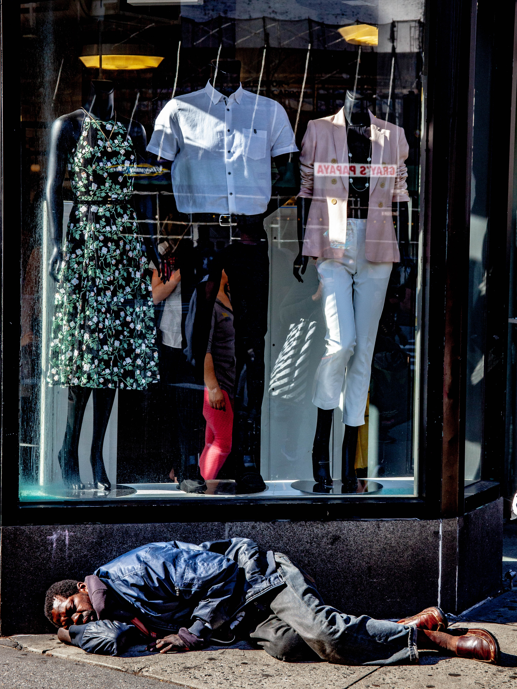

A injustiça em qualquer lugar é uma ameaça à justiça em todo lugar. (Martin Luther King)
ODS 10"Desigualdade de condições" é um dos significados do dicionário para a problemática que dá nome à esse site. E você caro leitor já deve ter presenciado, ou foi vítima de alguma situação a qual considerou injusta, que está mais evidente em meio a pandemia do Covid-19.
A Carta Magna brasileira (Constituição Federal de 1988) preconiza que todo cidadão brasileiro (nato ou naturalizado) dispõe de direitos e condições igualitárias de acesso a educação, moradia etc., Independentemente de sua classe, condições financeiras, gênero.
Quando nenhum dos fatores supracitados se concretiza, por deturpações na Lei, ocorre o que é conhecido como desigualdade. E para erradicá-la é necessário conhecer e tratar sua causa, e não somente suas consequências, como violência, marginalização, entre outros.
Quase 1 bilhão de pessoas, ou 15% da população mundial, sobrevivem com menos de 1,25 dólar por dia (El País).
No âmbito profissional há uma enorme discrepância quando mulheres ganham menores salários que os homens mesmo que tenham a mesma função ou o mesmo nível de capacitação para a tarefa.

Assim como não há nenhuma novidade nesta Terra, a desigualdade não foge à essa máxima. Sendo assim, a mesma se intensificou durante o surgimento do Capitalismo como o conhecemos (século XIX)

No Brasil há 126,9 milhões de usuários de internet, concentrados nos grandes centros urbanos e entre pessoas de maior poder aquisitivo – menos da metade (48%) dos brasileiros das classes mais baixas têm acesso.
It is a long established fact that a reader will be distracted by the readable content of a page when looking at its layout.
It is a long established fact that a reader will be distracted by the readable content of a page when looking at its layout.

It is a long established fact that a reader will be distracted by the readable content of a page when looking at its layout..
Seja bem-vinde ao meu primeiro site (oficialmente falando) e nele tentei mostrar alguns tópicos específicos desse tema tão abrangente e complexo, de um modo simples.
Me chamo Ana, e moro na capital de uma das maiores metrópoles desse mundo: São Paulo, onde sempre há algo a descobrir: desde leituras à um céu raramente estrelado. (E não, a feijoada daqui não é tão boa quanto dizem).
Atualmente, estou a cursar Recursos Humanos e tenho muito interesse pela área de programação e Web Design (Tem tudo haver!) e pretendo criar um site sobre o assunto num futuro não tão distante. Amo ler de tudo: de papéis de bala a livros de milhares de páginas, assim como terminar séries no mesmo dia (na maioria das vezes) e olhar o céu perceber o quão belo é tudo ao nosso redor se prestarmos a devida atenção.
Bem, como deu pra perceber gosto bastante de falar (ainda mais spbre um tema tão impactante)
e espero que sua estadia aqui seja proveitosa. Vida longa e próspera!